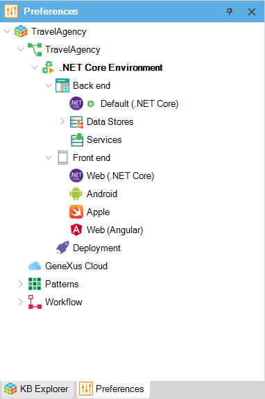
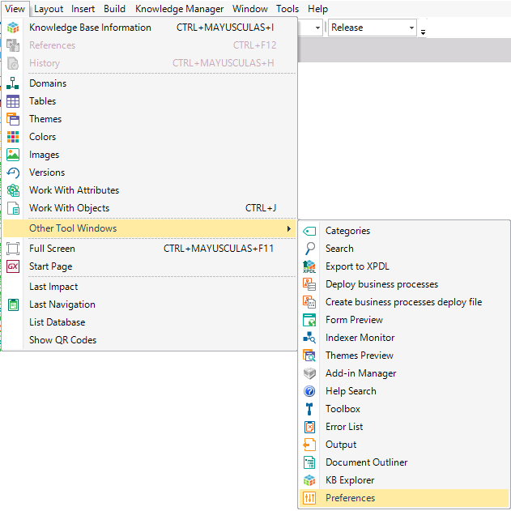

You can find the Preferences window in the tab next to the KB Explorer; this is where you can set the Knowledge Base properties, the Version properties and manage the Environments.  To open the preferences window, go to View > Other Tool Windows > Preferences:  See AlsoKnowledge Base Versions |
| Sub Categories | |
| Category:Environments | Category:Environments (GeneXus 16) |